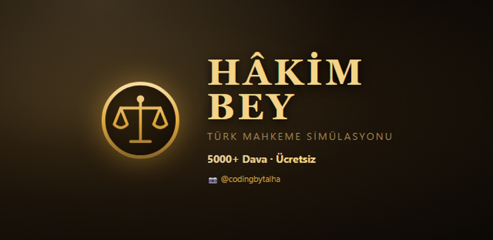

USTA
Toprak gerçekten yer değiştirir.The ground really moves.

USTA, gerçek iş makinelerini telefonda ve bilgisayarda elle tutulur hâle getiren bir simülatör. Kazdığın toprak yer değiştirir, kova dolar, kamyon yük alır, yağmurda yol çamura döner, kazdığın çukur suyla dolar.USTA makes real construction machines feel tangible on phone and computer. The soil you dig moves, the bucket fills, the truck takes the load, roads turn to mud in the rain and your pits fill with water.
Kendi şirketini kurarsın: ihalelere teklif verir, işi kazanır, hakedişini alırsın. Rütben yükseldikçe yeni makinelerin kilidi açılır. Atölyede çakar, ayna, bayrak, plaka, boya ve motorla makineni süsler; arkadaşlarınla aynı sahada birlikte çalışırsın.Start your own company: bid on tenders, win the job, get paid. New machines unlock as you rank up. Customise them in the workshop and work the same site with friends online.
DK210, yakından.The DK210, up close.
Burada oyna.Play it right here.
Öne çıkanlar.The highlights.
25 iş makinesi25 machines
Ekskavatör, beko loder, dozer, greyder, vinç, finişer, mikser ve fazlası.Excavator, backhoe, dozer, grader, crane, paver, mixer and more.
Yaşayan zeminLiving terrain
Kazı, yığın, çamur, su dolan çukurlar; yağmur ve gece.Digging, piles, mud, flooding pits; rain and night.
Şirket ve sıralamaCompany & leaderboard
İhaleler, hakediş, rütbe; Türkiye'nin en büyük şirketi ol.Tenders, payouts, ranks; become the biggest company.
Modifiye atölyesiCustom workshop
Çakar, ayna, bayrak, perde, tespih, boya, motor.Beacons, mirrors, flags, curtains, paint, engines.
Birlikte çalışCo-op
Arkadaşınla aynı sahada: biri kazar, öteki taşır.Same site with friends: one digs, one hauls.
Zincirle kurtarTow & rescue
Saplanan makineyi başka makineyle zincirle çek.Pull a stuck machine out with another one.
İş başında.On the job.
Oyundan kareler.Straight from the game.
- GeliştiriciDeveloper
- Talha Yalçın
- MotorEngine
- Godot 4.7
- SürümVersion
- 1.0 · build 8
- DillerLanguages
- 16
- FiyatPrice
- ÜcretsizFree
- PlatformPlatforms
- iPhone, iPad, Mac, Windows
Hâkim Bey
